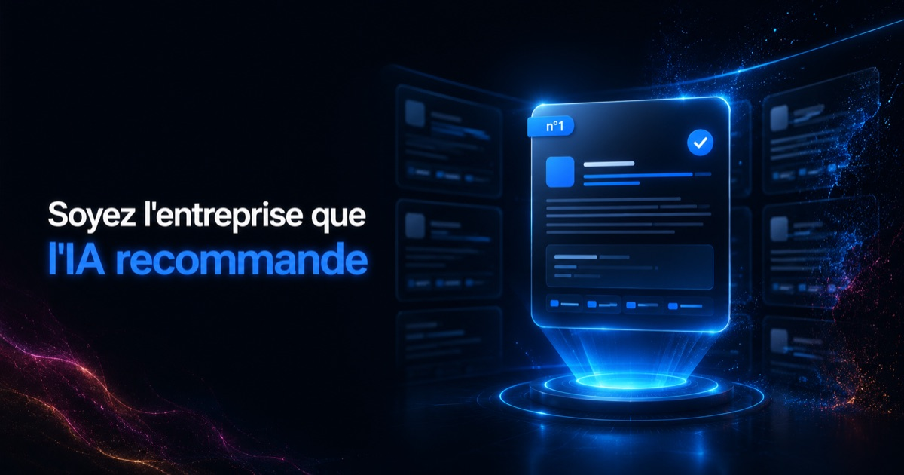

Chez Fiducia IA, nous ne vendons pas une promesse de visibilité : nous la démontrons. Les deux entreprises ci-dessous nous ont confié la création ou la refonte complète de leur site et l'intégralité de leur référencement SEO et GEO. Résultat concret : quand un prospect interroge ChatGPT ou Gemini sur leur métier, c'est leur nom qui ressort — accompagné de vrais visiteurs arrivant sur leur site directement depuis l'IA.
Note de transparence : les réponses des IA génératives sont non déterministes (elles varient selon l'utilisateur, la formulation et la date). Les résultats ci-dessous ont été observés en juillet 2026 et sont datés comme tels ; ils illustrent un travail de fond, pas une position garantie à vie.
Cas n°1 — Un cabinet d'avocat recommandé en premier sur deux requêtes sensibles
Le client. Le cabinet de Maître Ava Magassa (barreau de Montpellier), avocate qui défend deux causes précises et très concurrentielles : les parents face au placement abusif d'enfants par l'ASE, et les hommes victimes de violences conjugales — un positionnement rare, sur lequel la concurrence est rude et l'enjeu humain fort.
Ce que nous avons fait. Refonte complète du site du cabinet de Maître Ava Magassa, avocate à Montpellier, architecture en silos thématiques (une page dédiée par domaine de défense, dont une page « hommes victimes de violences conjugales »), rédaction de contenus en réponses directes, données structurées et ouverture aux crawlers IA — la couche GEO posée sur des fondations SEO solides.
Le résultat. Interrogés sur ces deux requêtes, ChatGPT comme Gemini (Google) désignent le cabinet en première position — « le profil le plus ciblé » pour l'un, « prioritaire » pour l'autre. Deux moteurs IA différents, même verdict :
Mieux qu'une capture : le site reçoit désormais des visiteurs directement référés depuis ChatGPT (trafic identifié par le paramètre utm_source=chatgpt.com) — la preuve mesurable que l'IA n'a pas seulement cité le cabinet, elle lui a envoyé de vrais prospects.
Cas n°2 — Un élevage présenté comme « le choix le plus cohérent » de sa région
Le client. L'Arche du Négadis, élevage de braques de Weimar à Paulhan (Hérault) — un marché de niche où les acheteurs cherchent avant tout un éleveur sérieux, sur une requête très ciblée : « élevage de braque de Weimar dans le sud de la France ».
Ce que nous avons fait. Création 100 % du site de l'élevage de braque de Weimar Arche du Négadis (Hérault), et référencement SEO/GEO complet : contenus détaillant les vrais critères de sérieux d'un élevage (LOF, dépistages sanitaires, socialisation), structurés pour être repris tels quels par une IA.
Le résultat. Là encore, les deux moteurs concordent : ChatGPT place l'Arche du Négadis en tête de liste (« le choix le plus cohérent autour de Montpellier »), et Gemini (Google) la cite comme l'élevage de référence en Occitanie :
Là encore, l'élevage enregistre des visites référées depuis ChatGPT (utm_source=chatgpt.com) : sur un marché de niche, être le nom cité par l'IA revient à capter l'acheteur avant même qu'il n'ouvre Google.
Ce que ces deux cas prouvent
- Le résultat tient sur plusieurs moteurs IA — ChatGPT et Gemini (Google), deux intelligences indépendantes, citent les mêmes clients en premier. Ce n'est pas le hasard d'un outil isolé, mais le signe d'un référencement de fond.
- La méthode fonctionne sur des secteurs opposés — un cabinet juridique sur des requêtes sensibles et un élevage de niche : même socle SEO, même couche GEO, mêmes résultats.
- Nous maîtrisons toute la chaîne — de la création du site au référencement SEO/GEO, sans sous-traiter : le résultat IA découle directement de choix de structure et de contenu faits dès la conception.
- La preuve est mesurable — pas seulement une capture d'écran, mais du trafic réel référé par ChatGPT, visible dans les statistiques de chaque site.
Vous voulez comprendre le mécanisme derrière ces résultats ? Nous l'expliquons dans nos articles SEO vs GEO et AI Overviews & AI Mode en France.